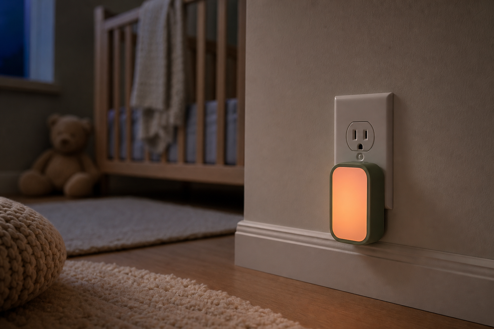
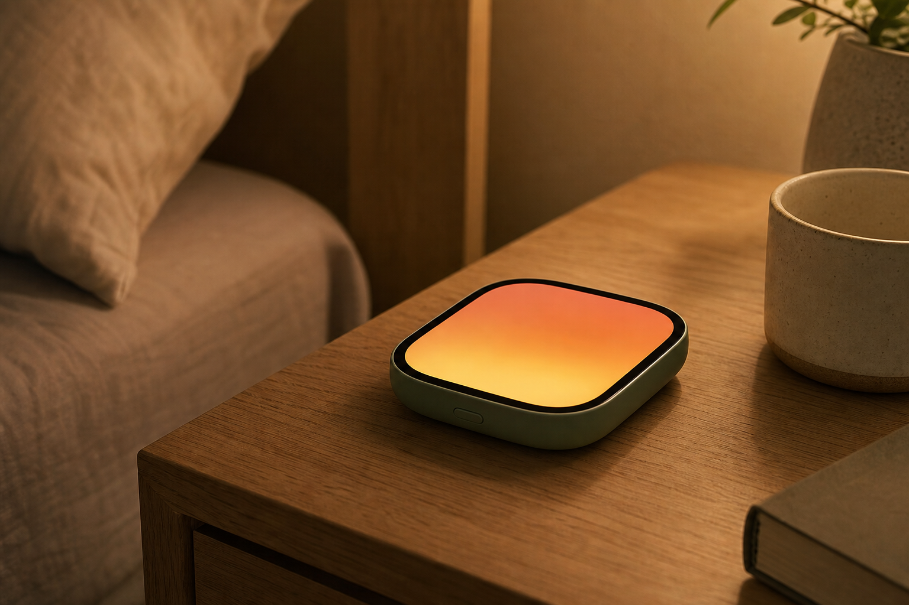
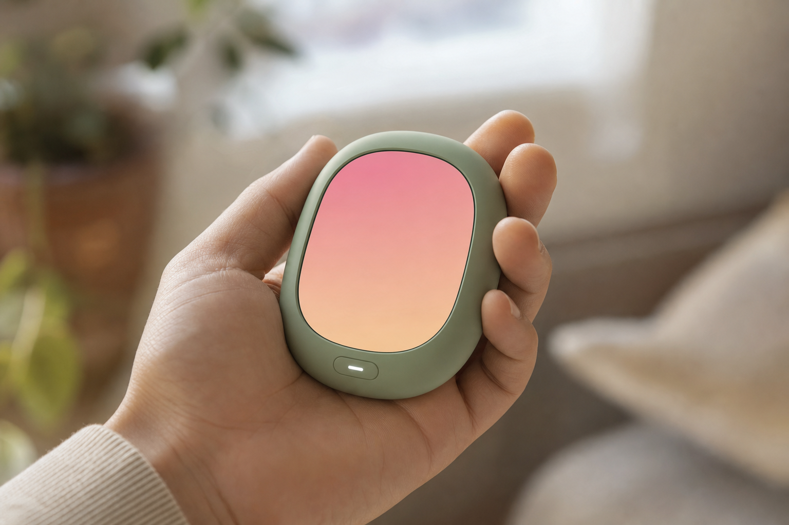
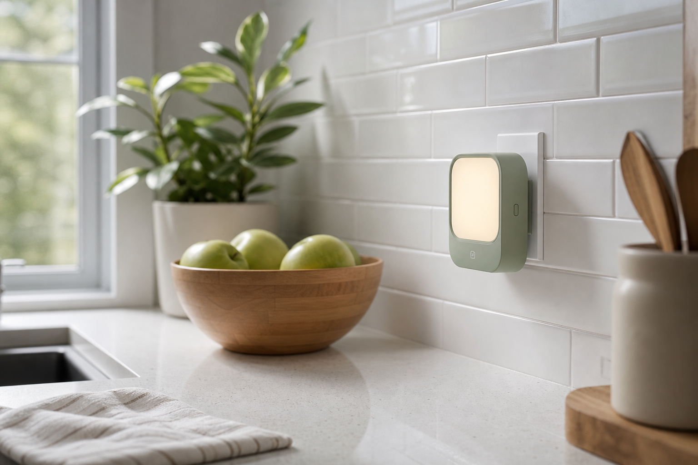

Castalia Institute
Ambient light for calm rooms.
Mynah is a small companion that lives on an outlet or nightstand—its whole screen becomes a gentle glow that shifts with dawn, dusk, and sleep. Not a lamp. Not a feed. A quiet presence.
Where it belongs
Plugged in, face toward the room
The same compact silhouette moves from nursery to kitchen—always plugged when possible, always oriented so the soft wash reaches you without shouting for attention.

Nursery, floor-height outlet
A night-orientation glow near the baseboard—enough to settle the room without turning on overhead lights.

Bedside table
Face-up on the nightstand: the screen is the nightlight—warm, gradual, and free of app chrome in sleep phases.

In hand
Small enough to carry between rooms—move dusk from the hallway to the rocking chair in one gesture.

Kitchen counter outlet
Day-neutral presence where the household gathers—quiet color when you want the room to feel awake but calm.
Behavior
Light that follows the day
Transitions stay slow; nights stay capped. Mynah is built around phases—labels for experience, not alarms screaming at you.
Dawn
Cool rose lifting toward soft peach—brightness ramps over many minutes, not seconds.
Day
Optional barely-there presence or rest—the device can read as simple decor.
Dusk
Amber shift and a gentle fall in brightness—wind-down without flipping wall switches.
Sleep
Deep amber or moonlit gray at true nightlight levels—stable until dawn begins again.
Deep dive: Ambient time-of-day glow · Hardware platform